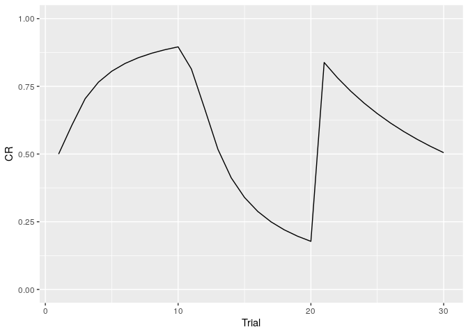
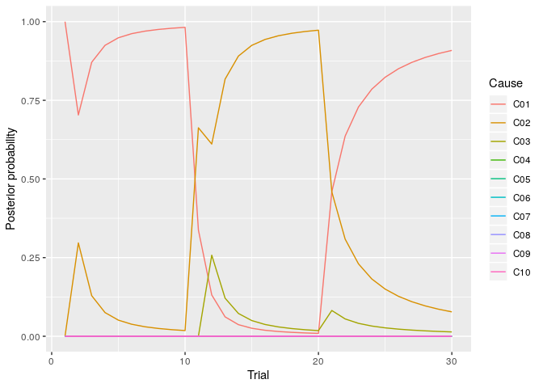
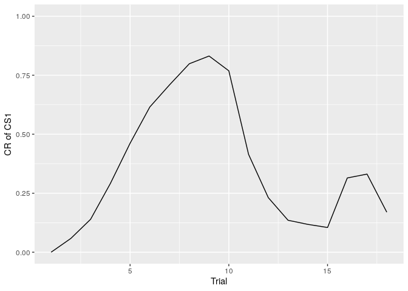
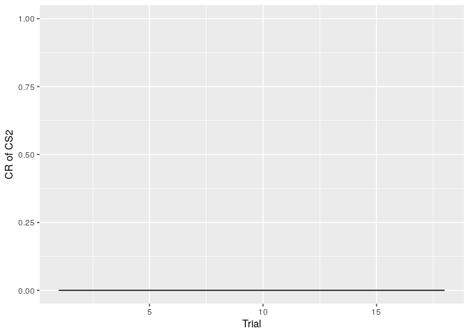
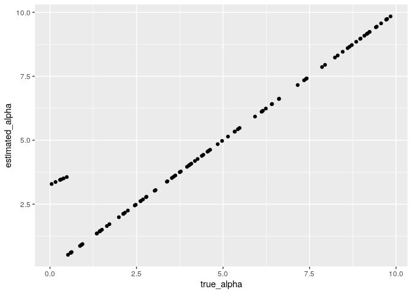

The goal of lcmr is to simulate phenomena of classical conditioning and fit the conditioning data with the latent cause model.
lcmr is an R package of Latent Cause Model: LCM and Latent Cause Modulated Rescorla-Wagner model: LCM-RW made bySam Gershman.
Installation
You can install the development version from GitHub with:
List of functions
- fit_lcm: Fit model to conditioning data
- infer_lcm: Simulate the classical conditioning with LCM
- infer_lcm_rw: Simulate the classical conditioning with LCM-RW
How to simulate the renewal effect with LCM
The renewal effect is the phenomenon in which the change of context after extinction can lead to a return of conditioned response (CR). infer_lcm(X,opts) can simulate the renewal effect.
First, you have to prepare the design of conditioning. In followings, I prepare the experimental design consisted from acquisition (CS presents with US in context A(context = 1), 10 trials), extinction (CS presents without US in context B(context = 0),10 trials) and test (CS without US in context A(context = 0), 10 trials).
US <- c(1,1,1,1,1,1,1,1,1,1, 0,0,0,0,0,0,0,0,0,0, 0,0,0,0,0,0,0,0,0,0)
CS <- c(1,1,1,1,1,1,1,1,1,1, 1,1,1,1,1,1,1,1,1,1, 1,1,1,1,1,1,1,1,1,1)
Context <- c(1,1,1,1,1,1,1,1,1,1, 0,0,0,0,0,0,0,0,0,0, 1,1,1,1,1,1,1,1,1,1)
X <- cbind(US, CS, Context)You can simulate the conditioned response using infer_lcm(). I simulate the conditioned response setting the alpha = 0.4 . The alpha is the concentrate parameter of the Chinese Restaurant Process.
You can the plot of change of conditioned response through the trials using the following codes.
library(tidyverse)
sim_data <- data.frame(X, Trial = seq(1,length(US)), CR = sim_res$V)
sim_data %>%
ggplot(aes(x = Trial, y = CR)) +
geom_line() +
ylim(0,1)
You can draw the plot of the posterior probability of each cause using the following codes.
sim_post <- as.data.frame(sim_res$post)
sim_post %>%
mutate(Trial = seq(1,length(US))) %>%
rename(C01 = V1, C02 = V2, C03 = V3, C04 = V4, C05 = V5,
C06 = V6, C07 = V7, C08 = V8, C09 = V9, C10 = V10) %>%
gather(key = "Cause", value = "post",-Trial) %>%
mutate(Cause = as.factor(Cause)) %>%
ggplot(aes(x = Trial, y = post, color = Cause)) +
geom_line() +
ylim(0,1) +
labs(y="Posterior probability")
How to simulate the spontaneous recovery with LCM-RW
The spontaneous recovery is the phenomenon in which the time elapses following extinction can lead to a return of conditioned response (CR). infer_lcm_rw(X,opts) can simulate the spontaneous recovery.
First, you have to prepare the design of conditioning. In followings, I prepare the experimental design consisted from acquisition (CS1 presents with US, CS2 presents without US, 9 trials each CS), extinction (both CSs presents without US, 6 trials each CS) and test (both CSs presents without US after 1 day, 3 trials each CS).
US <- c(1,0,0,1,1,0,1,0,1,1,0,0,1,0,0,1,1,0, 0,0,0,0,0,0,0,0,0,0,0,0, 0,0,0,0,0,0)
CS1 <- c(1,0,0,1,1,0,1,0,1,1,0,0,1,0,0,1,1,0, 1,1,0,1,0,0,1,0,1,1,0,0, 1,0,0,1,1,0)
CS2 <- c(0,1,1,0,0,1,0,1,0,0,1,1,0,1,1,0,0,1, 0,0,1,0,1,1,0,1,0,0,1,1, 0,1,1,0,0,1)
time <- c(0, seq(1:17)*4, 100+seq(1:12)*4, 86400+seq(1:6)*4)
X <- cbind(time, US, CS1, CS2)You can simulate the conditioned response using infer_lcm(). I simulate the conditioned response setting the alpha = 0.45 and the eta = 0.2. The alpha is the concentrate parameter of the Chinese Restaurant Process and eta is the learning rate of the RW model.
You can the plot of change of conditioned response through the trials using the following codes.
library(tidyverse)
sim_data <- data.frame(X,
Trials_cs1 = cumsum(CS1),
Trials_cs2 = cumsum(CS2),
CR = sim_res$V)
sim_data %>%
filter(CS1 == 1) %>%
ggplot(aes(x = Trials_cs1, y = CR)) +
geom_line() +
ylim(0,1) +
labs(x = "Trial", y = "CR of CS1")
sim_data %>%
filter(CS2 == 1) %>%
ggplot(aes(x = Trials_cs2, y = CR)) +
geom_line() +
ylim(0,1) +
labs(x = "Trial", y = "CR of CS2")
How to fit LCM to the conditioning data.
You have to prepare the data as long format containing the following variables (Order and name is exactly the same as following):
- ID Subject ID
- CR Conditioned Response
- US Unconditioned Stimulus
- CS Conditioned Stimului or Context. If using multiple CS, set variables name as CS1,CS2,CS3…
I make the synthetic data for model fitting with the experiment design of the renewal effect.
US <- c(1,1,1,1,1,1,1,1,1,1, 0,0,0,0,0,0,0,0,0,0, 0,0,0,0,0,0,0,0,0,0)
CS <- c(1,1,1,1,1,1,1,1,1,1, 1,1,1,1,1,1,1,1,1,1, 1,1,1,1,1,1,1,1,1,1)
Context <- c(1,1,1,1,1,1,1,1,1,1, 0,0,0,0,0,0,0,0,0,0, 1,1,1,1,1,1,1,1,1,1)
X <- cbind(US, CS, Context)I make synthetic data for 100 participants.
number_of_perticiapnts <- 100
participants_alpha <- runif(number_of_perticiapnts, 0, 10)
data <- NULL
for (i in 1:number_of_perticiapnts) {
sim_data <- infer_lcm(X, opts = list(c_alpha = participants_alpha[i], M = 1000))
sim_df <- data.frame(ID = rep(i,length(US)), CR = sim_data$V, X)
data <- rbind(data,sim_df)
}You can estimate parameter alpha using fit_lcm(data, model, opts, parameter_range, parallel, estimation_method). You have to specify the following argument for model fitting:
model: 1 = latent cause model, 2 = latent cause modulated RW model
parameter_range: range of parameter(a_L, a_U, e_L, e_U)
stimation_method: 0 = optim or optimize(lcm), 1 = post mean(only latent cause model)
results <- fit_lcm(data,
model = 1,
parameter_range = list(a_L = 0, a_U = 15),
estimation_method = 0)I check the parameter recovery. It looks well recovery of parameter alpha.
parameter_recovery <- data.frame(true_alpha = participants_alpha, estimated_alpha = results$parameters$alpha)
parameter_recovery %>%
ggplot(aes(x = true_alpha, y= estimated_alpha)) +
geom_point()
How to fit LCM-RW to the conditioning data.
The fit_lcm() allow to estimate alpha and eta of LCM-RW (set model = 2). However, fit_lcm() can not to estimate parameter adequatly at this time(fit_lcm can not recover the parameter adequately).
Bugs and question
Please report on this repository’s issues